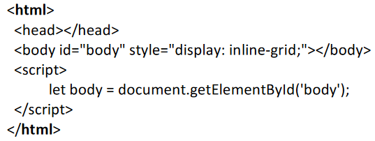

Resolução e análise à ficha de trabalho nº 3
Documento pdf associado: Ficha de trabalho nº 3
A terceira ficha de trabalho realizada teve por objetivo a criação de elementos HTML com
recurso à linguagem de programação introduzida na cadeira, JavaScript. Todos os exercícios que
compõem esta ficha em particular associam-se mutuamente. Foi sem dúvida uma ficha de trabalho
que permitiu apreender conhecimentos acerca da associação da linguagem com o DOM, de modo a produzir
conteúdo apenas seguindo um script e sem utilizar criar elementos HTML de forma "direta".
Destaques a salientar:
- No início do enunciado foi dado um exemplo de um documento/layout a partir
do qual seriam realizados os exercícios pedidos;
- As alíneas culminavam numa tabela e nela deveriam ser escritos dados
em caixas respetivas, correspondendo estes a labels próprios;
- Por fim, e tal como na ficha de trabalho nº 2, procedi ao versionamento
através do GIT.
Documento original sugerido no início da ficha de trabalho:

Exercício 1: Escreva programaticamente, com suporte de JavaScript,
um documento HTML que:
- a. Contenha três labels e respetivas caixas de texto para
inserção de nome, sobrenome e idade,
com um botão final com o texto "Guardar":
Resolução:
É possível notar-se que a resolução fala por si própria, muito
graças aos comentários.
- Primeiramente foi criada uma variável denominada de "body", que iria conter
o elemento "body" como argumento através do método "getElementById", chamado fazendo
referência ao documento HTML através da palavra "document";
- De seguida foi criada uma variável/array chamada "labels", que iria conter os
labels que irião compor o header da tabela final ("Nome", "Sobrenome" e "Idade");
- Foi utilizado em seguida um ciclo "for... of..." que viria a percorrer cada label
presente no array declarado acima e criar uma variável denominada "labelElem" para
cada um destes;
- Para cada uma das novas variáveis/labels é atribuído o valor "label" com "for" como nome
do atributo;
- O elemento labelElem é adicionado ao body em seguida, através da função
"appendChild()";
- Finalmente, o nome da label foi colocado na label concretamente, com o auxílio
da propriedade "innerHTML";
- De modo a terminar a primeira fase do que foi pedido na alínea a), foram criadas
três caixas de texto, para cada uma das labels:
- Foi criado o elemento inputElem, utilizando para isso a função "createElement", recebendo
esta o elemento "input" como argumento e sendo associada ao documento HTML através da palavra "document",
tal como na criação dos elementos label;
- Novamente, tal como com o processo de concepção do labelElem, mas desta vez diferenciado
pelo facto do objetivo delineado ser diferente, foi atribuído com o nome de atributo "id"
o elemento label ao inputElem;
- Finalmente, o inputElem foi adicionado ao body do documento através
da função "appendChild()".
- Prosseguindo e
finalizando a alínea a), foi criado o botão de "Guardar", seguindo a
mesma lógica utilizada durante todo o exercício, primeiro criando o
elemento "button" através do método "createElement()" e guardando o
mesmo numa variável denominada de buttonElem;
- Dentro do
botão foi escrito "Guardar" através da função innerHTML;
- Por fim, foi adicionado ao body o elemento "button" através do
método "appendChild()".
- b. Contenha uma tabela com o seguinte header:
- i. "nome", "sobrenome", "idade".
Resolução:
Procedi de seguida à criação da tabela pedida e colocação dos headers tal como
escrito no enunciado. Sabendo de antemão que teria que repetir a lógica anterior, mas agora
para a criação de um elemento "table", segui em frente com o exercício.
- Comecei por criar o elemento "tableElem", repetindo o mesmo processo da
alínea a), ou seja, através do acesso ao documento com o método "createElement()",
consegui lograr o objetivo de criar o elemento principal da tabela;
- De seguida, foi necessário criar um elemento "table row" (tr), seguindo o mesmo processo
do passo anterior, com o auxílio do método "createElement()", desta vez criando uma variável
definida como "trElem";
- O header para a tabela foi criado usando um array com as strings
"Nome", "Sobrenome" e "Idade". Sendo esse array iterado através de um "for... of...",
utilizando a variável "h" para definir cada elemento do header;
- Dentro do iterador de arrays "for... of..." foi criado um elemento "table header" (tr),
através do método mais utilizado durante o exercício, createElement();
- Foi escrita dentro dos elementos "th" cada uma das strings presentes no array "header".
Feito logrado com o método "innerHTML";
- Por fim, o passo final do bloco de instruções presente no "for... of...", foi adicionado ao elemento
trElem cada um dos elementos "th", usando para tal a função "appendChild()";
- Fora da área de ação do iterador de arrays foram adicionados ao elemento tableElem e ao body os
elementos "trElem" e "tableElem", respetivamente. Novamente, foi utilizado o método "appendChild()"
para o processo.
- c. Crie um array "pessoas" composto por objetos pares
chave-valor do header da tabela:
Resolução:
Novamente uma novidade presente nesta ficha de trabalho, desta feita o conceito
de um array composto por objetos pares chave-valor, que deveriam basear-se no header
da tabela.
- Em primeiro lugar, foi criada uma variável denominada de "pessoas";
- De seguida, utilizando os parêntesis retos e dentro dentro deles as "chavetas",
foram criados os objetos pares chave-valor, sendo que criei três diferentes objectos,
separados por vírgula.
- d. Preencha a tabela com os valores do array "pessoas":
Resolução:
De seguida foi pedido para preencher a tabela entretanto criando com os valores que se
encontravam dentro do array "pessoas". Houve necessidade de regressar aos conceitos utilizados
anteriormente nesta ficha de trabalho, com vários métodos entretanto já utilizados.
- Utilizando inicialmente o iterador de arrays, definiu-se que para cada "pessoa"
do array "pessoas" seria:
- Criado um elemento table row (tr) para cada uma das pessoas, utilizando o método createElement,
fazendo referência ao documento da página e atribuindo esse valor a uma variável denominada de "tr";
- Atribuído ao elemento tableElem os valores atribuídos a cada uma das linhas (tr).
- Utilizado um novo conceito, o de iterar sobre um objeto ("for... in..."), iterando sobre
cada elemento presente no objeto "pessoa" e dando-lhe o nome de "chave", criando de resto uma coluna
por cada "chave";
- Criado um novo elemento denominado de td (table data), que viria a ser posteriormente
adicionado ao elemento da tabela através da função appendChild();
- Por fim, e para finalizar o bloco de instruções do iterador "for... of..." presente mais acima,
foi escrito conteúdo no elemento "td", sendo este a chave presente no objeto pessoa, isto é,
cada um dos dados introduzidos.
Exercício 2: Altere o documento HTML do exercício 1 para que
a inserção de dados na tabela ocorra aquando do clique no botão "Guardar":
Resolução:
Para proceder ao objetivo de alterar o documento HTML de modo a ocorrer uma inserção de dados
na tabela criada anteriormente, foi necessário criar uma função denominada de "guardar" (mais um novo
conceito "treinado" aquando da resolução desta ficha de trabalho). Explicarei todos os detalhes
da dita função em seguida:
- Primeiramente foi utilizada a sintaxe que permite definir uma função e escrever código
no corpo da mesma. Sendo esta criada com as palavras "function guardar() {}", sendo que o que
se encontrava dentro das "chavetas" o corpo da função que viria a ser chamada aquando do clique no botão
"Guardar";
- Foi criado um objeto "pessoa", encontrando-se este inicialmente vazio;
- De seguida, através do método "getElementById()" foi dado uma propriedade
"nome", "sobrenome" e "idade" ao objeto pessoa, lendo no processo os valores presentes
nas caixas de input:
- Começando por adicionar as propriedades utilizando o "." (ponto) como ponte de ligação
do objeto à propriedade;
- Em seguimento, foi utilizado o já referido método "getElementById()" para ler os valores
de "id" presentes nas caixas de texto ("Nome", "Sobrenome" e "Idade");
- Finalmente, no final de cada uma das três linhas de código, foi lido o seu valor através
da keyword "value".
- Foi criada uma nova linha para a tabela utilizando o método "createElement()" com "tr" como argumento,
fazendo referência, como já várias vezes durante a resolução da ficha, ao documento e guardando o valor
numa variável, tr neste caso em particular;
- Foi também utilizado um iterador "for... in..." de modo a obter cada chave do objeto "pessoa"
e sendo realizados vários processos no corpo do iterador (pouparei nos detalhes pois todas as linhas
de código que se seguem já foram utilizadas de uma maneira ou de outra):
- Em primeiro lugar, a criação de um elemento "td", que ficou guardado na variável "td";
- Em segundo lugar, a junção do elemento "td" já referido ao elemento "tr";
- Em terceiro lugar, a adição do elemento "tr" ao elemento "tableElem", provocando uma espécie de
"efeito em cadeia";
- Em quarto e último lugar, a escrita em cada elemento "td" do valor obtido através de cada "chave"
presente no objeto "pessoa".
- Por fim, foi introduzido o conceito do método "addEventListener()", que recebe
como argumentos o nome do evento em questão e a função (que neste caso tratou-se de uma
callback);
- O evento tratava-se do clique do botão e portanto denominava-se de "click", a função foi,
como já referido, chamada de "guardar";
- Foi, de resto, adicionado ao elemento do botão ("buttonElem") este método não antes usado,
de modo a obter o efeito pretendido.
Exercício 3: Altere o programa para limpar as caixas de texto
após o clique no botão:
Resolução:
Como espécie de "extra" na ficha de trabalho em questão, foi pedido que fosse
modificado o programa de modo a que, após o clique no botão "Guardar", as caixas
de texto fossem limpas caso contivessem algum conteúdo escrito.
- Sendo simples de explicar, as novas linhas de código definiam que:
- Utilizando um "for... of...", para cada uma das labels que faziam parte do array "labels":
- Haveria um acesso ao valor, através da junção do método getElementById() e ".value", fazendo referência ao documento;
- As caixas de texto seriam limpas aquando do clique no botão guardar.
Nota de destaque: Estas novas linhas de código encontravam-se no scope da função
"guardar()".
Considerações finais: Finda a ficha de trabalho nº 3, concluo que foi sem dúvida muito
interessante e recompensador utilizar a linguagem JavaScript na sua ação predileta: interação com o DOM.
Foi muito recompensador realizar este exercício utilizando a versão mais primitiva da linguagem, denominada de
Vanilla. Tanto a criação completa de elementos HTML como a interação com os mesmos foi algo que me trouxe
um muito melhor entendimento do core desta linguagem de programação que aprecio cada vez mais à medida
que aprendo a semântica associada à mesma.